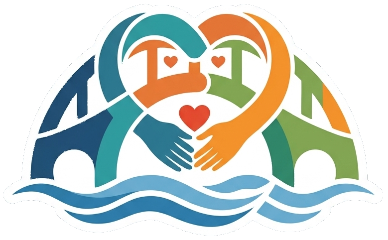
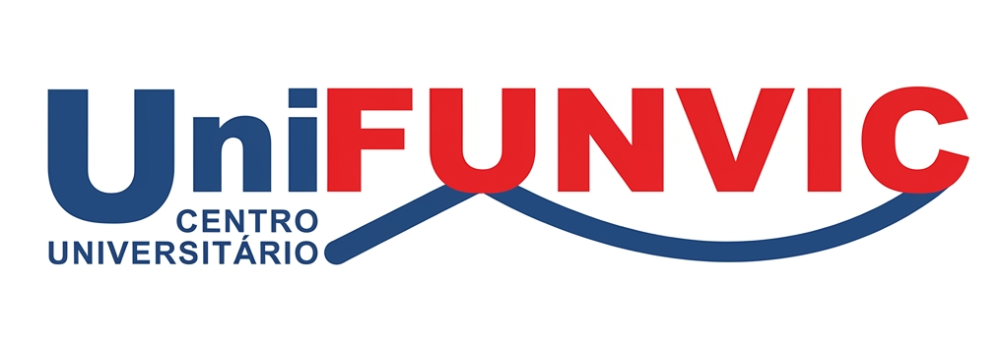
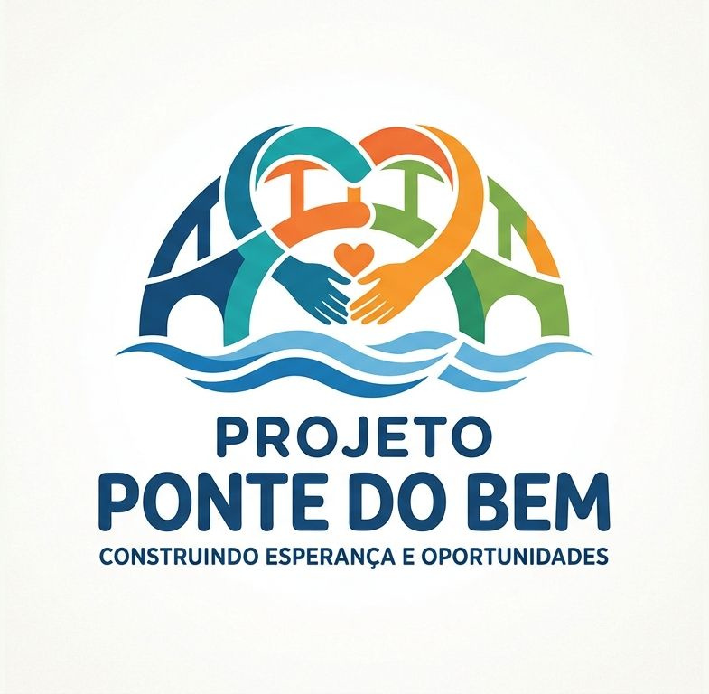
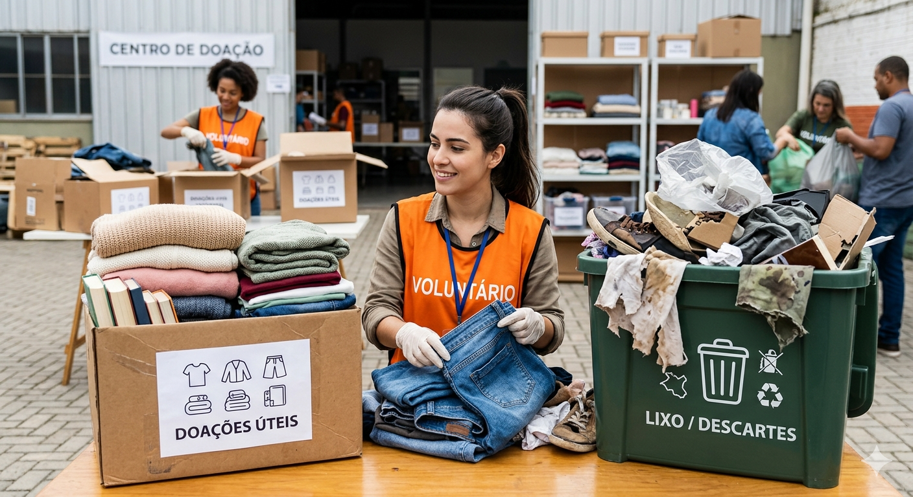

Construindo Esperança e Oportunidades


A Ponte do Bem nasceu para facilitar a solidariedade em nossa cidade. Muitas vezes queremos ajudar, mas não sabemos onde entregar ou o que cada instituição precisa no momento.
Aqui você encontra locais, horários e categorias de doações aceitas por instituições que transformam a vida de quem mais precisa em Pindamonhangaba.
O projeto Ponte do Bem orgulha-se de estar conectado à UniFunvic. Unimos forças para ampliar o alcance das ações sociais em Pindamonhangaba, utilizando a tecnologia e o ambiente acadêmico para transformar a realidade da nossa comunidade.
Saiba mais sobre os projetos da instituição:
Visitar site da UniFunvic
Para que sua ajuda seja realmente útil, doe apenas itens em bom estado de conservação. Lembre-se: se não serve para você por estar estragado ou sujo, provavelmente também não servirá para o próximo.
Conectando quem quer ajudar às instituições de Pindamonhangaba